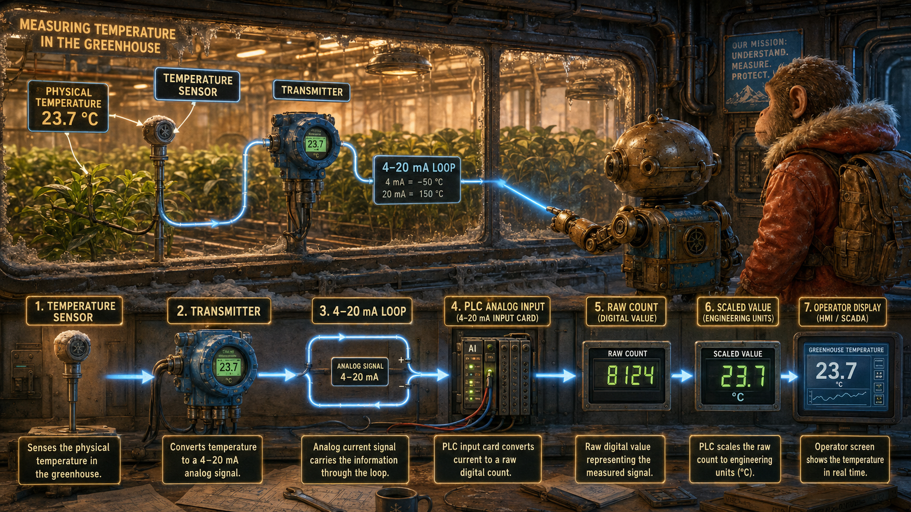
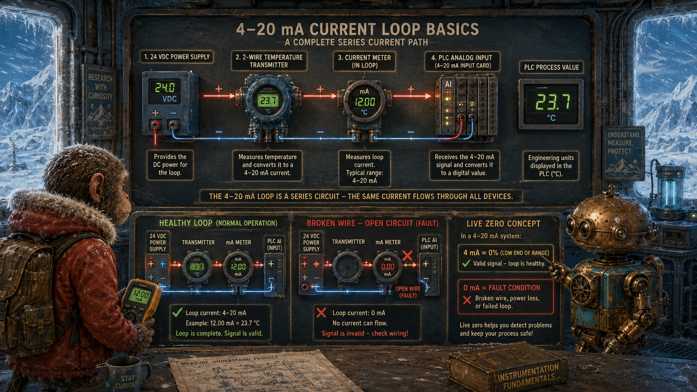
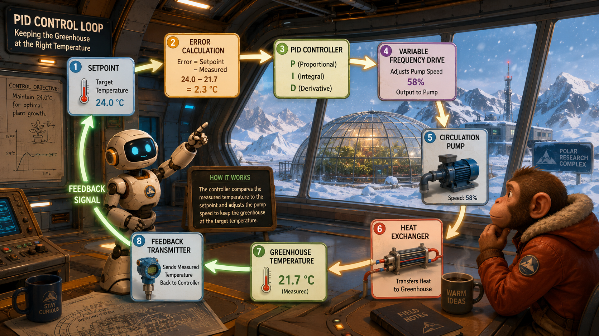
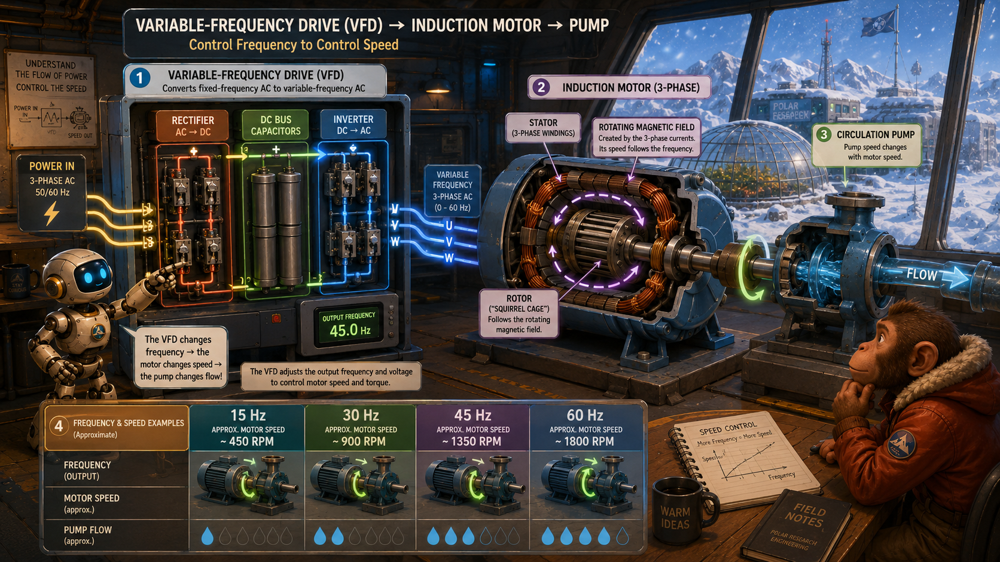
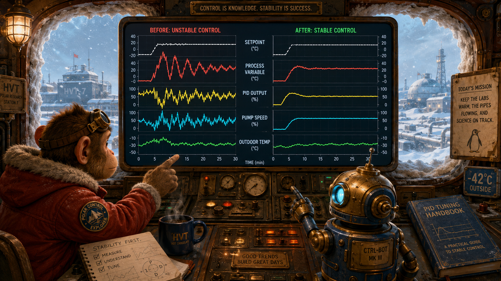
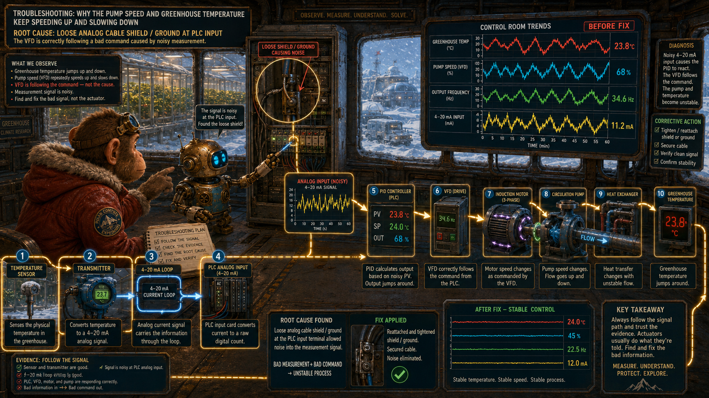

Question
Why is a thermostat switch less informative than a temperature transmitter?
The switch reports only whether a threshold has been crossed. A transmitter reports the measured temperature across a range.
Lesson 9 · Continuous Process Control
A blizzard has buried the remote research complex beneath snow. Inside, the greenhouse is cooling, one laboratory is overheating, and a circulation pump repeatedly accelerates and slows down. Monkey and Robot must follow the complete control loop—from sensor signal to PLC calculation, VFD command, pump speed, heat flow, and measured result—to discover why the system cannot settle.
Wide landscape educational illustration, whimsical painterly 3D science-adventure style. Monkey and a compact brass-and-blue Robot approach a vast polar research laboratory complex during a blizzard. Every roof, walkway, vehicle, railing, exterior pipe, and service road is completely covered in snow. Huge windows reveal glowing laboratories, a greenhouse, circulation pumps, heat exchangers, PLC control rooms, and overhead piping inside. Blue-white storm light outside contrasts with warm amber interior light. Dramatic, clean, cinematic, no border, no watermark, 16:9 landscape.
Some conditions cannot be described adequately as only true or false.
| Discrete question | Analog question |
|---|---|
| Is the tank high? | What is the exact tank level? |
| Is the room hot? | What is the room temperature? |
| Is the pump running? | How fast is the pump running? |
| Is there flow? | What is the flow rate? |
Asks whether a condition is present.
Measures the amount, magnitude, or rate of a changing condition.
Why is a thermostat switch less informative than a temperature transmitter?
The switch reports only whether a threshold has been crossed. A transmitter reports the measured temperature across a range.
Monkey says, “The switch tells us whether the room is hot.” Robot replies, “The transmitter tells us exactly how hot—and whether the temperature is changing.”
The heating system combines process equipment, instruments, logic, and feedback.
A heated-water storage tank supplies thermal energy.
A VFD-controlled pump moves heated fluid through the complex.
Heat exchangers and control valves transfer energy into rooms and greenhouse zones.
Temperature, pressure, and flow transmitters report the actual result.
The sensing element interacts with the process; the transmitter creates a usable signal.
Responds physically to the measured condition.
Converts the sensor response into a standardized signal.

Wide educational cutaway illustration inside the snow-covered polar research complex. Show a greenhouse temperature sensor, transmitter, 4–20 mA loop wiring, PLC analog input card, raw digital count, scaled engineering value, and operator display reading temperature. Robot traces the measurement chain from physical temperature to displayed value while Monkey observes behind a huge frost-covered window. Clear arrows, clean labels, painterly 3D industrial science-adventure style, 16:9 landscape.
A changing current represents a changing measurement.
| Loop current | Example temperature |
|---|---|
| 4 mA | 0°F |
| 8 mA | 25°F |
| 12 mA | 50°F |
| 16 mA | 75°F |
| 20 mA | 100°F |
The 4 mA minimum represents a valid low-end measurement while still proving that the loop is energized.
A reading near 0 mA may indicate lost power, an open wire, or a failed transmitter rather than a valid process value.

Wide educational electrical diagram in the polar research laboratory. Show a 24-volt power supply, two-wire temperature transmitter, PLC analog input, current meter, loop wiring polarity, and a complete series current path. Include a comparison between a healthy 4–20 mA signal and a broken-wire 0 mA condition. Robot points to the live-zero concept while Monkey holds a meter. Frosted windows and snow outside, clean symbols and labels, painterly 3D teaching style, 16:9 landscape.
Why is 4 mA more useful than 0 mA as the minimum valid measurement?
Because zero current can be reserved as evidence of a failed or open loop instead of being confused with a valid minimum process value.
The loop must remain complete, correctly polarized, and within the available supply voltage and resistance limits.
The controller does not initially receive “72°F.”
The displayed engineering value depends on the transmitter range, wiring, analog module, and scaling configuration.
A believable number can still be wrong if one stage of the conversion chain is configured incorrectly.
Scaling converts an electrical or digital range into a useful physical range.
Convert raw input into degrees Fahrenheit or Celsius.
Convert raw input into pounds per square inch or another pressure unit.
Convert raw input into gallons per minute or percent level.
What happens if a 0–100°F transmitter is scaled in the PLC as though it were 0–200°F?
The controller will calculate and display an incorrect temperature even though the transmitter and wiring may be functioning correctly.
Correct hardware can still produce incorrect information when software scaling does not match the instrument range.
Closed-loop control begins by comparing what is happening with what is desired.
The measured condition, such as greenhouse temperature.
The desired value, such as 68°F.
The difference between setpoint and process variable.
The command sent to the valve, heater, fan, or pump drive.
Feedback determines whether the command produced the intended result.
The controller issues a command without measuring the process result.
The controller measures the result and continually adjusts its command.
The command expresses what the controller wants the equipment to do.
Feedback shows what the process actually did.
A process continues responding after the command changes.
The process rises above the desired value.
The process falls below the desired value.
The measured result responds after a delay.
Monkey says, “The system keeps correcting too late.” Robot replies, “That is why continuous control must consider both error and process behavior.”
PID combines present error, accumulated error, and rate of change.
Responds to the size of the present error.
Responds to error that continues over time.
Responds to how quickly the process is changing.

Wide educational illustration inside the polar research complex showing a circular PID control loop. Include setpoint, error calculation, proportional-integral-derivative controller, variable-frequency drive, circulation pump, heat exchanger, greenhouse temperature, and feedback transmitter. Robot follows the signal around the loop while Monkey watches the greenhouse behind enormous snow-covered windows. Use clear arrows, readable labels, glowing feedback path, painterly 3D engineering-adventure style, 16:9 landscape.
Proportional, integral, and derivative represent present, past, and direction.
A controller should not be tuned to compensate for a faulty or noisy measurement.
A VFD adjusts AC motor speed by controlling output frequency and voltage.
Converts incoming AC into DC.
Stores and smooths electrical energy.
Creates controlled variable-frequency AC.
Drives the circulation-pump motor at commanded speed.

Wide educational cutaway illustration of a variable-frequency drive and induction motor inside the polar research complex. Show rectifier, DC bus capacitors, inverter section, changing output frequency, three-phase motor windings, rotating magnetic field, rotor, and variable-speed circulation pump. Robot points from the VFD power stages to motor rotation while Monkey compares 15 Hz, 30 Hz, 45 Hz, and 60 Hz speed examples. Frosted windows, deep snow outside, clean labels, painterly 3D industrial teaching style, 16:9 landscape.
The rotating magnetic field changes speed when electrical frequency changes.
| Frequency | Approximate synchronous speed for a four-pole motor |
|---|---|
| 60 Hz | 1800 rpm |
| 45 Hz | 1350 rpm |
| 30 Hz | 900 rpm |
| 15 Hz | 450 rpm |
This applies the rotating magnetic field and induction-motor principles introduced earlier in the course.
An induction-motor rotor normally turns slightly slower than the synchronous rotating field.
A single value is one observation; a trend is a process narrative.
Shows overshoot, undershoot, drift, and disturbances.
Shows how aggressively the controller is correcting.
Shows whether the VFD follows the command smoothly.

Wide educational control-room illustration in the snow-buried polar research complex. Monkey and Robot study a large trend screen showing setpoint, process variable, PID output, pump speed, outdoor temperature, overshoot, oscillation, and stable control. Include before-and-after trend sections with noisy unstable control on one side and smooth stable response on the other. Huge windows are completely rimmed with snow, painterly 3D engineering-adventure style, clear labels, 16:9 landscape.
The greenhouse is cooling while the circulation pump repeatedly accelerates and decelerates.

Dramatic educational troubleshooting illustration inside the snow-covered polar research complex. The circulation pump and VFD are repeatedly speeding up and slowing down while the greenhouse temperature trend jumps erratically. Robot discovers a loose analog cable shield or grounding connection at the PLC analog input terminal. Monkey follows a glowing diagnostic path from greenhouse sensor to transmitter, 4–20 mA loop, analog input, PID controller, VFD, motor, pump flow, heat exchanger, and greenhouse temperature. Show that the VFD is correctly following a bad command caused by noisy measurement evidence. Clear arrows and labels, painterly 3D industrial science-adventure style, 16:9 landscape.
A loose signal shield or grounding connection introduces electrical noise into the analog measurement. The PID loop reacts to temperature changes that are not physically occurring.
Should the PID loop be retuned immediately?
No. The measurement fault should be corrected first. Tuning a controller around bad evidence hides the real problem and can create new instability.
Monkey says, “The drive keeps changing speed.” Robot replies, “Because the controller believes the temperature keeps changing. First repair the evidence.”
Repair shielding and grounding, verify wiring, confirm stable analog values, review filtering, observe the trend, and only then consider PID tuning.
Trace measurement, interpretation, decision, command, equipment response, and process result as separate stages.
A comfortable laboratory appears on the operator screen as dangerously hot.
The PLC scaling range does not match the configured transmitter range.
Physical measurement, electrical signal, raw controller data, and displayed engineering value are related but not identical.
Compare evidence from multiple points before deciding which component has failed.
Use each answer to check the control chain.
What is the process variable in the greenhouse loop?
The measured greenhouse temperature.
What does integral action respond to?
Error that persists and accumulates over time.
What does derivative action respond to?
The rate and direction of process change.
What does a glowing VFD run indicator prove?
It proves the drive is in a run state, but additional feedback is needed to prove motor speed, flow, and process response.
The central ideas behind analog measurement and continuous process control.
What is the main advantage of a closed-loop controller?
It measures the actual process result and adjusts the command according to the difference between desired and measured conditions.
What is the main troubleshooting lesson?
Verify the measurement evidence before blaming or tuning the controller, drive, motor, or process equipment.